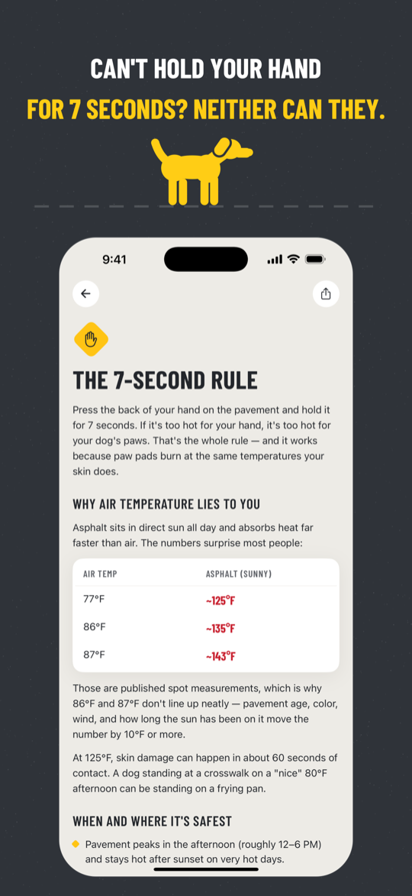
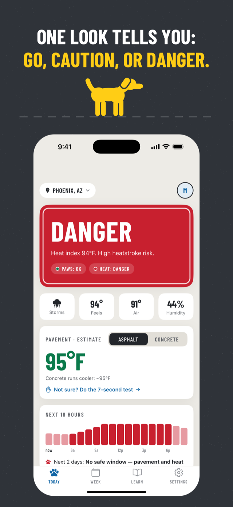
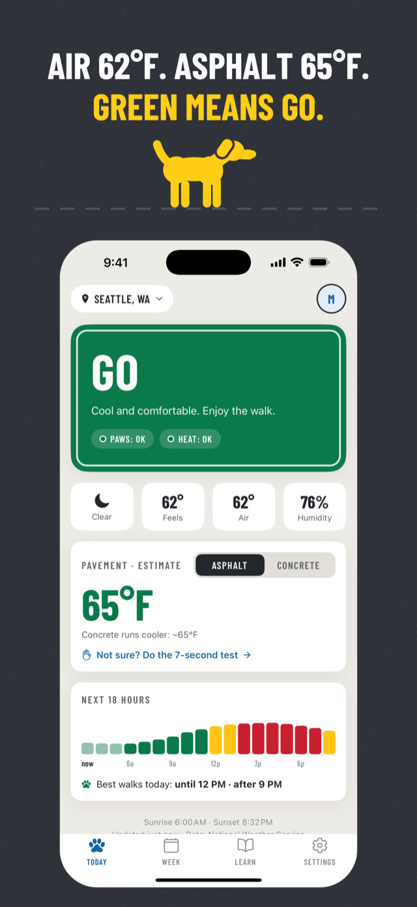
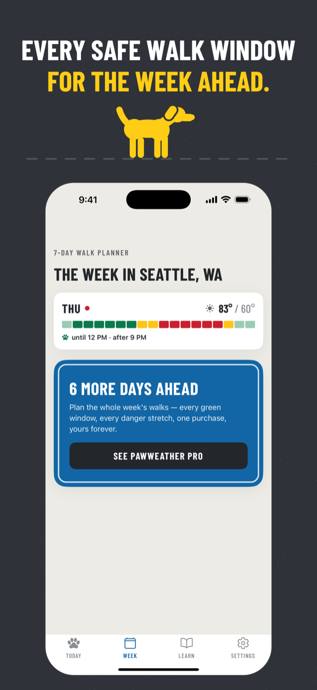

7 seconds
Your hand has the final say
Press the back of your hand flat on the pavement and hold it for seven seconds. If you can't hold it, your dog shouldn't walk on it. It works because paw pads burn at the same temperatures your skin does.
PawWeather estimates pavement temperature — nobody has a thermometer in every sidewalk. An estimate can't see your exact street: a shaded block, a freshly watered lawn and a black rubber track all behave differently. The app is there to tell you when to bother checking, and to plan around the hours you should skip. Full method in when is pavement too hot for dog paws.

One look, before you clip the leash
Open it on the porch. Location, verdict, the reason, the estimated asphalt and concrete temperature, and the hours that are still safe today.



How the verdict is made
Two different dangers, with two different answers. PawWeather judges them separately and shows you the worse of the two, so the reason you get is the reason that matters.
Paws — pavement temperature
Estimated from the National Weather Service forecast, sun angle, cloud cover and surface type (asphalt or concrete), plus the pavement's own thermal lag.
- Under 110°FGo
- 110°F+Caution grass, shade, shorter route
- 125°F+Danger skin damage in about a minute
Puppies get 5°F stricter thresholds — thinner pads. Concrete sidewalks run roughly 20–25°F cooler than asphalt in the same sun, and the app shows both numbers so you can just cross the street.
Heat — heatstroke risk
The heat index: temperature plus humidity, because a dog cools itself by panting and humid air makes that fail.
- Under 80°FGo
- 80°F+Caution keep it short and easy
- 90°F+Danger high heatstroke risk
Stricter for the dogs that overheat first: flat-faced breeds −6°F, puppies and seniors −4°F, a dark coat in direct sun −3°F (10°F stricter at most). Air at 100°F or above is DANGER regardless.
Why "walk after sunset" isn't automatically safe
Asphalt holds its heat. When the model was checked against 16 Arizona DOT roadway sensors about 3.7 hours after sunset, the pavement was still 6.8°F above air temperature on average, up to 10.1°F — and it was warmer than the air at all 16 stations. PawWeather carries that lag forward hour by hour, which is exactly why its evening windows are narrower than a plain temperature forecast would suggest.
Pavement numbers are shown rounded to 5°F. That is deliberate: it is an estimate, and rounding keeps it from looking more precise than it is.
Free, and Pro
The safety answer is never behind the paywall. Today's verdict, today's hour-by-hour timeline, one dog profile and every Learn article are free, forever.
Free
- The verdict for right now, where you are
- Today's hour-by-hour timeline and today's best walk windows
- Estimated asphalt and concrete temperature
- One dog profile, judged on its own risk factors
- All of the Learn guides, including the 7-second rule
PawWeather Pro — $3.99, one time
- 7-Day Walk Planner — every safe window for the week ahead
- Smart Alerts — a morning summary of the day's danger hours, and a pre-walk check before your usual walk time
- The whole pack — profiles for up to 6 dogs
A one-time App Store purchase tied to your Apple ID. No subscription, no ads, no accounts.
Support
Questions, bug reports, a verdict that looked wrong for your street — write to me.
nosunosukawa@gmail.comSolo developer — I read everything, and replies usually take a day or two. Privacy policy: how PawWeather handles your data.
Where does the weather come from?
The National Weather Service (api.weather.gov), a free U.S. public service in the public domain. That is also why coverage is the United States only right now — the app has no forecast source outside it.
I bought Pro and it isn't showing up
Open Settings → Restore purchases. Pro is a non-consumable App Store purchase tied to the Apple ID that bought it, so restoring works on any device signed in to that Apple ID. If it still doesn't unlock, email me and I'll help.
It keeps suggesting walk times I'd never take
Settings → Walk hours caps the earliest (5–8 AM) and latest (7–11 PM) times PawWeather will ever suggest. Walk windows and alerts stay inside those hours — set them to your routine and to the streets you trust after dark.
What about cold, ice and road salt?
This version judges heat only. On a cold day it says so plainly instead of saying "safe" — it does not look at ice or de-icing salt, and it won't pretend otherwise.
Does it collect my data?
No accounts, no ads, no analytics, no tracking. Dog profiles and settings stay on the phone. If you allow location, the coordinates go only to the National Weather Service to fetch the forecast. Details in the privacy policy.
Read first, then walk
Free guides, generated by the same engine that runs in the app.
Is it too hot to walk my dog? — free checker
Enter the air temperature and the sky, get an instant GO / CAUTION / DANGER verdict with estimated asphalt and concrete temperatures. Runs in your browser, no app needed.
When is pavement too hot for dog paws?
A pavement temperature chart by air temperature, the 7-second hand test, and what roadside sensors told us about how long asphalt stays hot after sunset.
Is a cloudy day safe for dog walks?
Clouds cut pavement heating, but they don't erase it: charts for full sun, partly cloudy and overcast — plus what switching to the concrete sidewalk buys you.
Pavement temperatures are estimates. They are modelled from the forecast, the sun's angle and cloud cover — not measured on your street. Surface age, color, wind and shade move the real number by 10°F or more. The 7-second hand test always has the final say.
PawWeather is an educational planning tool, not veterinary advice. If your dog shows signs of a paw burn or heatstroke, contact a veterinarian right away.